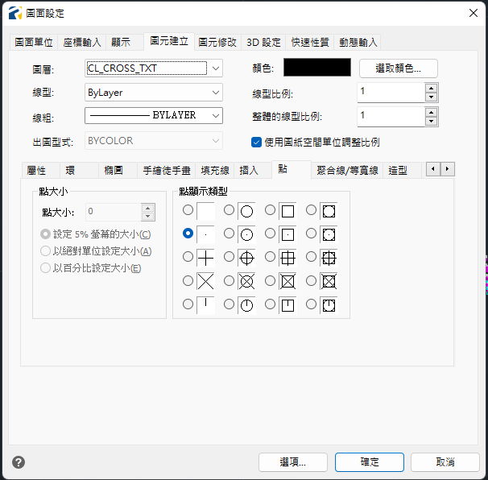

HanksVBA繪圖資料庫操作流程(一)
前言
主要講述點資料、點群組資料在文字檔、EXCEL檔、CAD圖中互相傳遞的過程，最終希望達成的目標為CAD圖上面的點圖塊及多段線資料。
從取得機器輸出的原始檔之後，會經過載入點資料、展點、整理數據等基本流程直到成為各線段的群組資料為止，以下將會先針對主畫面的區塊進行說明，並且依照各個基本流程的使用情境進行問題解說。
相關的基本流程將包含:
- 載入文字檔
- 展點
- 整理數據
- 連線
主畫面

點資料
| 欄位名稱 | 說明 |
|---|---|
| PT_NUM | 編號 |
| E | X 座標(東座標) |
| N | Y 座標(北座標) |
| Z | 高程 |
| CD | 備註 |
線資料(點群組資料)
| 欄位名稱 | 說明 |
|---|---|
| Feature | 線屬性 |
步驟1.載入文字檔
在此僅探討文字檔如何載入至EXCEL檔案中，先假定各位已經能夠順利從機器導出原始資料，各種測量儀器能夠輸出的內容皆大同小異，文字檔通常能夠順利打開，目前有遇過的為CSV、ASC、TXT都是正常的。
流程
- 取得原始資料(本案例為CSV檔案)
- 點選按鈕 載入TXT
- 點資料自動清空
- 對話窗會跳出第一行內容，接續請選擇模式
- 檢查並清理一下點資料(第二行E、N不應為文字)
- 完成(詳主畫面點資料)
PS: 以TWD97來說，N座標大多為26XXXXX，E座標大多為6碼。
步驟2.展點
產生點資料前，需確保ProgeCAD目前乃呈現為已開啟並可編輯，其中圖塊部分應已載入Point該項圖塊名稱。
如果要方便，可以直接將20250612-PCAD繪圖模板.dwg開啟，此dwg已包含所有後續繪圖會使用到的設定及圖塊內容。
流程
- 確認CAD已開啟並可進行編輯
- 點選按鈕展點
- 輸入文字高度(單位mm)，預設為0.5
- 跳出通知窗「點物件創立完成!」
- 移動至CAD查看完成內容
PS: 文字高度需要看測量各點位之間的距離是否會看不清楚，如果需要再將已生成的點圖塊刪除後，重新再點選按鈕生成。
PS.2: 移動至CAD後可能會因為基本圖幅過大導致未見點資料內容，可以先透過 ZOOM 指令，選取 E 選項將作用範圍移動至既有資料的邊界。
PS.3: CAD中關於點的呈現，可以透過 PTYPE 指令打開選取點顯示線型，目前預設就是一個小點 
步驟3.整理數據
線資料是由點資料依照CD碼進行分群排序而生，也可稱為點群組資料。點群組內容可指定排序依據進行排序，並且透過線屬性的設定讓線段在繪圖的過程有不同的行為。
排序依據
| 排序方式 | 說明 |
|---|---|
| E | 依據 E 欄位排序 |
| N | 依據 N 欄位排序 |
| PT_NUM | 依據點位編號排序 |
線屬性
| 屬性代碼 | 說明 |
|---|---|
| 留白 | 進行連線 |
| X | 不進行連線 |
| A | 不進行連線，點位會另外畫圈提示，用於特殊點位標註 |
流程
- 點選按鈕 整理數據
- 輸入排序依據
- 根據各個點群組內容首列輸入線屬性
- 完成
步驟4.連線
將已經排序完成的點群組資料以及設定完線屬性後的內容繪製於CAD上面。
流程
- 點選按鈕 連線
- 跳出通知窗「連線完成!」
- 移動至CAD確認成果
結語
經歷上述過程便能夠將測量回來的文字資料呈現為較為直觀的圖面資料，透過圖面資料的審查，可以即時的發現是否有某部分的測量點CD碼標註錯誤，此時可以對照該圖塊的點編號即時於點資料內容進行修正進行重新輸出。
點群組的排序順位會直接影響線段的連線品質，故在測量前的工具箱會議建議可以有個良好的規劃，先將今日測量目標先繪製成紙本草圖，針對各線段進行CD碼的命名，每條線段都是基於不同CD碼而生成，測量方式則是有轉彎或有高程變化就需要進行量測才會精準。
如果點資料已經相當混亂，倒也可以捨棄每線不同CD碼的原則，透過你比較舒服的方式進行測量，最後在內業過程手動進行各點的連線也可以，其中要注意連線過程需要用CAD指令PL進行，未來在橫斷面樁取樣只要有交會點就可以進行高程計算了。